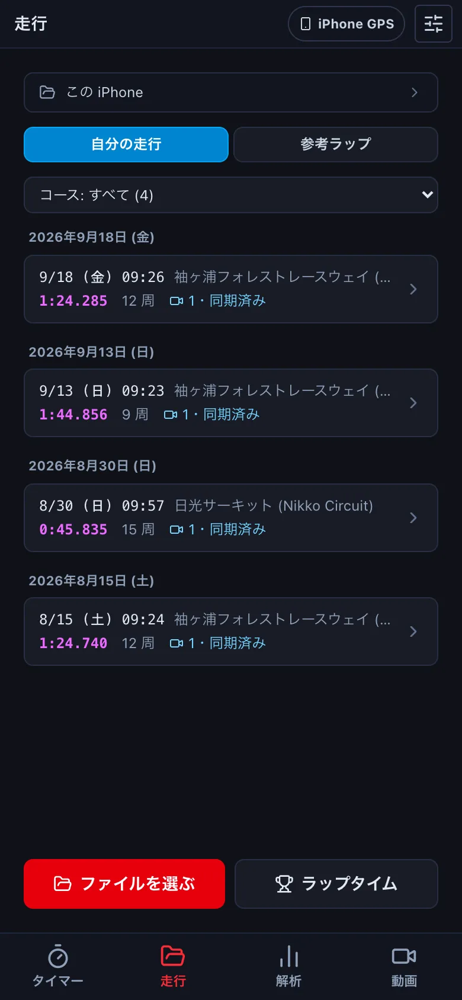
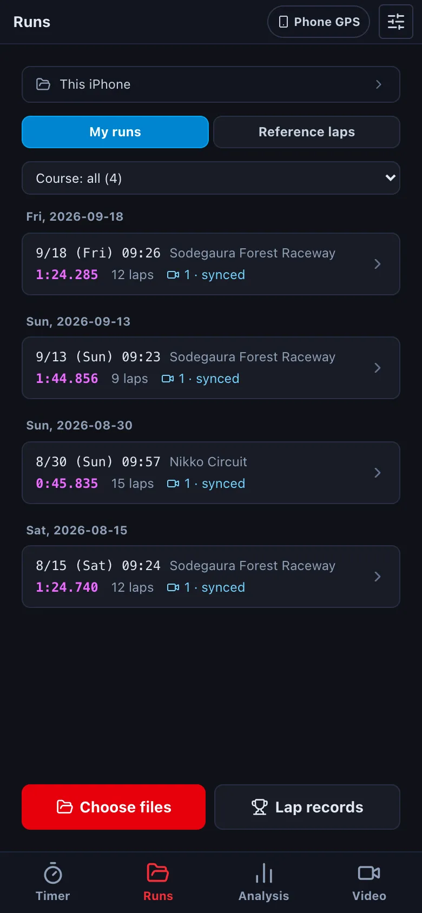
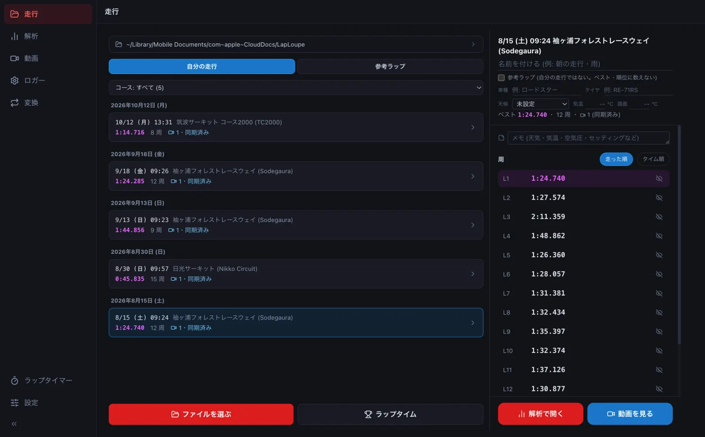
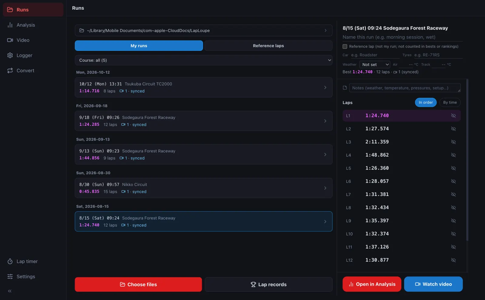
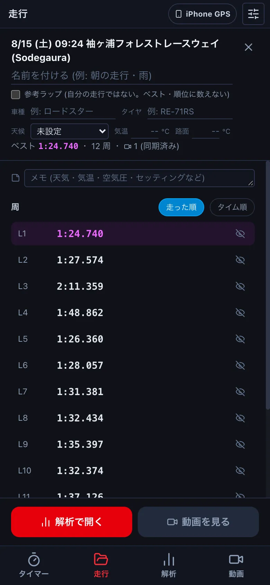
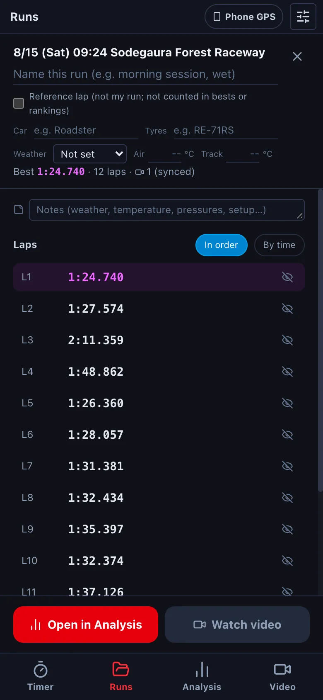
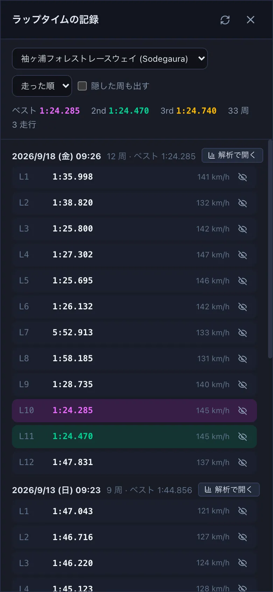
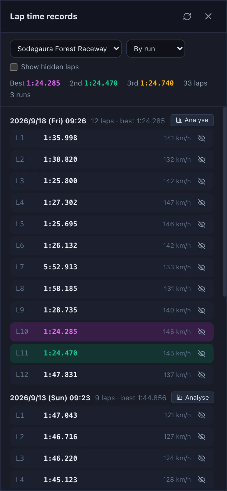
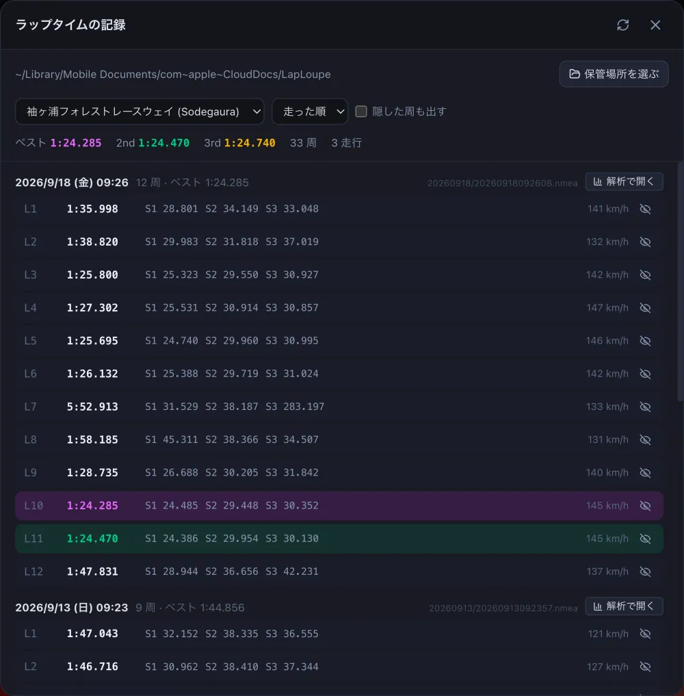
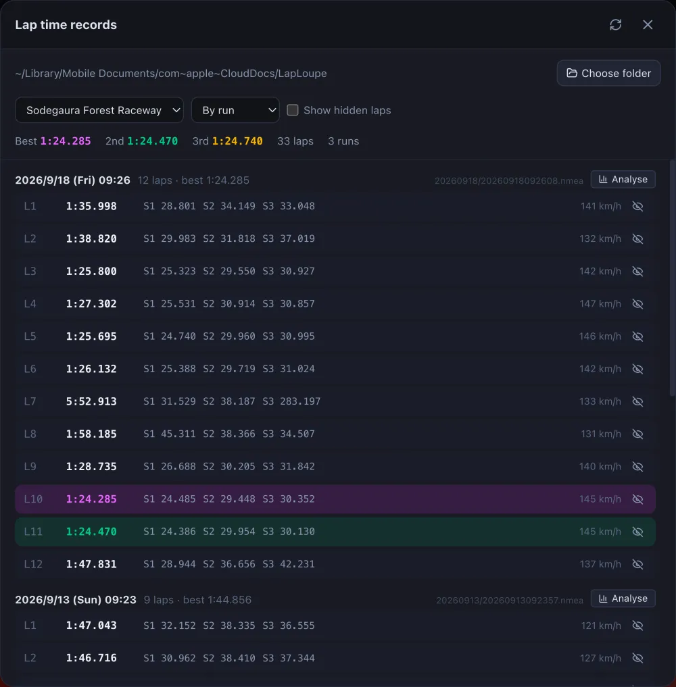

走行を見返すLook back at your runs
測った走行は「走行」の画面にまとまります。日付ごとに、ベストの周・周の数・動画があるかが並び、押すと周の一覧が出ます。Your runs are collected on the Runs screen. Each run shows its best lap, number of laps and videos; tap it to see every lap.
ブラウザ版には「走行」の画面がありません。保管場所 (走行のファイルを置くフォルダ) を使えないためです。ログのファイルは ファイルを開く で開いてください。The browser version has no Runs screen, because it cannot use a storage folder. Open log files with Open file.
-
下のタブの 走行 を押します。Tap Runs in the bottom tabs. 左の 走行 を押します。Click Runs on the left.




走行が新しい順に並びます。紫の数字がその走行のベスト、カメラのマークは動画の数です (「同期済み」なら、動画とログの時刻が合っています)。コース: すべて でコースを絞れます。Runs are listed newest first. The purple time is the run's best lap; the camera icon shows its videos ("synced" means the video is matched to the log). Use Course: all to filter by course. -
走行を押すと、周の一覧が出ます。紫がベストの周です。タイム順 で速い順に並べ替えます。目のマークを押すと、その周を隠します (ピットに入った周など。ベストや順位に数えなくなります。ファイルは消えません)。Tap a run to see its laps. The purple lap is the best. By time sorts them fastest first. The eye icon hides a lap (an in-lap, for example) so it no longer counts towards bests and rankings; the file is not deleted.


- 解析で開く で速度のグラフ・コースマップ (→ D1)、動画を見る でその走行の動画をメーターと一緒に (→ E1) 見返します。どちらも、いちばん速い周から始まります。Open in Analysis shows the speed graph and course map (→ D1); Watch video plays the run's video with the gauges (→ E1). Both start from the fastest lap.
-
コースごとのベストは、一覧の下の ラップタイム で見ます。そのコースのすべての走行の周が並び、速い順の 1〜3 位に色が付きます。For the best laps of a course, press Lap records under the list. Every lap there is listed, with the top three coloured.




「☁️ 未集計」と出る走行は、iCloud にだけあって、まだこの端末に取り込まれていない走行です。開くと取り込んでから周を数えます。Runs marked "☁️ Not counted" are only in iCloud and not yet on this device. Opening one downloads it and counts the laps.